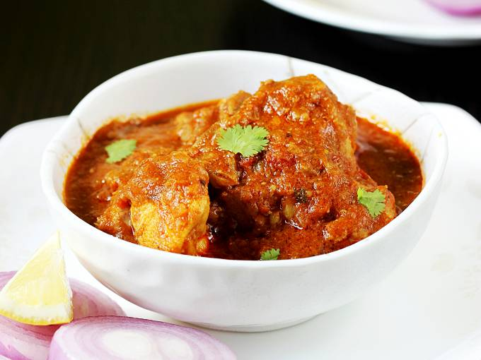

Curry Recipes From South Asia
On this page you will find different curry recipes from the Indian and Bengali Cultures. What our specialty is, is that we are able to handle some of the spiciest foods, and still love some of the sweetest dishes. Let's first take a look at some of the spicy foods Bengalis and Indians love to eat.
Chicken Curry
Chicken Curry is not only made amongst a majority of Bengali families, it is also made among many Indian families. In India, Punjabis,Assamese, Kashmiri,
Rajasthani, and Meghalayan Cultures, for a few examples, are where meat is mainly eaten. Otherwise, many Indian Subcultures are all vegetarian due to the
high beliefs and regards for animals in Hinduism and the slight variations in them. Bengalis, especially Bengalis who are also Muslim, eat meat as well, but they
need to be halal, i.e. Sacrificed in the name of Allah. Bengalis and Indians do not eat pork due to individual religious and spiritual beliefs. The recipe listed below
is a very generic chicken recipe that many people can use if they crave Chicken Curry.
| Total Time: | 1 Hour |
|---|---|
| Prep Time: | 15-20 minutes |
| Cook Time: | 35-40 minutes |
Ingredients:
- 2 Lbs of Clean, Cut, Skinless Chicken (Your Choice as to What Part)
- 1.5 teaspoon of Garam Masala
- 3/4 Cups of Water
- 1/4 Cup of Cooking Oil
- 1 and 1/2 Cups of Chopped Onion
- 2 teaspoons Salt
- 1 tablespoon garlic paste
- 1 and 1/2 teaspoon ginger paste
- 1 tablespoon Curry Powder
- 1 teaspoon ground cumin
- 1 teaspoon ground turmeric
- 1 teaspoon ground coriander
- 1 teaspoon red chili pepper
- 1 tablespoon water
- 15 ounces of crushed tomatoes
- 1 cup plain yogurt
- 1 tablespoon chopped fresh cilantro
Steps:
- Gather all Ingredients
- Warm Up Oil in Pot on Medium Flame.
- Fry Onions Until Golden Brown.
- Put Garlic and Ginger in Pot
- Add in the ground spices, cumin, turmeric, coriander, chili pepper, and salt, and mix till red-orange color.
- Add in Chicken after color becomes red-orange.
- Mix Chicken till paste completely coats the chicken
- Let it simmer,10-15 minutes on low flame
- After letting it simmer, pour in the water
- Let it Boil for 20-30 Minutes on Medium-Low Flame.
- Add in Cilantro after done boiling.
Egg Curry

Eggs on the other hand are only eaten by nonvegetarian Indians and Bengalis. In Hinduism and Sikhism, many refrain from eating eggs due to religious beliefs but many Bengalis, more specifically Muslim Bengalis, eat eggs as long as they do not have a spot of blood on them. Below is another generic Egg Curry Recipe that can be easily made by anyone who wishes to have the egg.
| Total Time: | 30 Minutes |
|---|---|
| Prep Time: | 15-20 Minutes |
| Cook Time: | 30 Minutes |
Ingredients:
- 6-8 Eggs
- 1/2 Bell Pepper
- 5-6 Cherry tomatoes
- 1 small potato
- 1/2 teaspoon ginger
- 2 cloves of minced garlic
- 1 small onion
- 1 teaspoon red chili powder
- 3/4 teaspoon of turmeric
- 1/4 teaspoon of garam masala
- 1/2 tablespoon of salt
Steps:
- Gather All Ingredients
- Boil Eggs for 15 minutes
- Dice Potato and Bell Pepper
- After Done Boiling, Peel Eggs, and Make 3 Small Slices on the Eggs.
- Warm Oil in Pot on Medium Flame
- Fry Onion in Oil till Golden Brown and Soft
- Put in Ginger and Garlic
- Put in the Spices and Salt, red chili powder and turmeric and garam masala and mix till orange-reddish color
- Add in Eggs and Vegetables
- Mix it all together till everything is coated with the paste
- Let it simmer for 15 minutes on low flame.
- Optional: Add cilantro on top.
For Even more Recipes, feel free to head to these websites:
https://www.allrecipes.com/recipe/212721/indian-chicken-curry-murgh-kari/
https://www.indianhealthyrecipes.com/punjabi-egg-curry-anda-curry-dhaba-style/